apstat-u1-5-3a-graphs-105000
The quiz scores (points) are 62, 67, 68, 73, 73, 79, 79, 82, 85, 87, 92, 95. Which representation correctly displays these quantitative data?
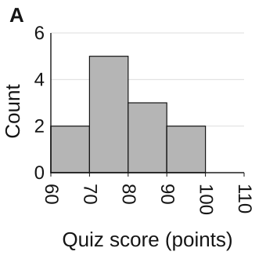

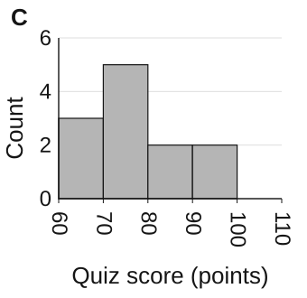

Reviewer key and revision details
Derived answer: D. Historical stored key must be compared before release.
A · replaced_categorical_bar — Bin-count error: the 60-69 bar has 2 instead of 3, while the 70-79 bar has 5 instead of 4. A correct total alone does not make the individual bars accurate. Fix: Tally each observation into its interval before comparing bar heights.
B · retained_histogram — Bin-count error: the 70-79 bar has 3 instead of 4, while the 80-89 bar has 4 instead of 3. A correct total alone does not make the individual bars accurate. Fix: Tally each observation into its interval before comparing bar heights.
C · replaced_keyless_stemplot — Bin-count error: the 80-89 bar has 2 instead of 3, while the 70-79 bar has 5 instead of 4. A correct total alone does not make the individual bars accurate. Fix: Tally each observation into its interval before comparing bar heights.
D · retained_histogram — Each bar matches the number of supplied observations in its interval. The frequencies total 12, and every observation is counted once.


apstat-u1-5-3a-graphs-105001
The one-way commute times (minutes) are 14, 14, 21, 23, 23, 26, 30, 31, 35, 36, 39, 45. Which representation correctly displays these quantitative data?
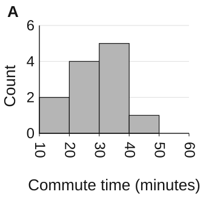
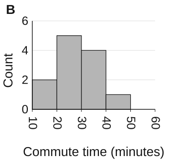
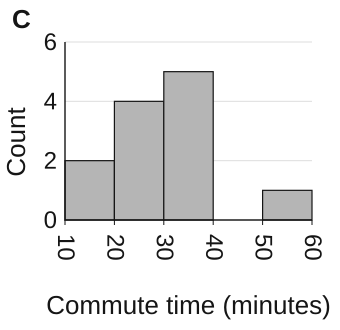
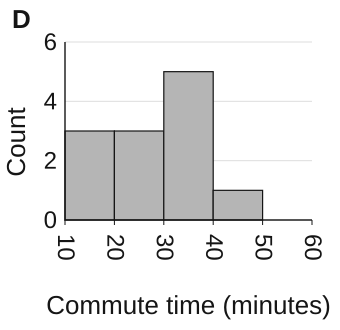
Reviewer key and revision details
Derived answer: A. Historical stored key must be compared before release.
A · retained_histogram — Each bar matches the number of supplied observations in its interval. The frequencies total 12, and every observation is counted once.
B · replaced_keyless_stemplot — Bin-count error: the 30-39 bar has 4 instead of 5, while the 20-29 bar has 5 instead of 4. A correct total alone does not make the individual bars accurate. Fix: Tally each observation into its interval before comparing bar heights.
C · retained_histogram — Bin-count error: the 40-49 bar has 0 instead of 1, while the 50-59 bar has 1 instead of 0. A correct total alone does not make the individual bars accurate. Fix: Tally each observation into its interval before comparing bar heights.
D · replaced_categorical_bar — Bin-count error: the 20-29 bar has 3 instead of 4, while the 10-19 bar has 3 instead of 2. A correct total alone does not make the individual bars accurate. Fix: Tally each observation into its interval before comparing bar heights.


apstat-u1-5-3a-graphs-105002
The battery life (hours) are 9, 7, 9, 10, 9, 11, 10, 14, 15, 13, 16, 17. Which representation correctly displays these quantitative data?
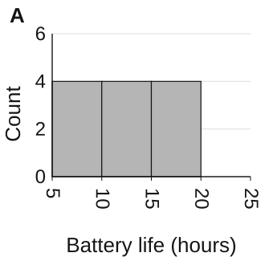
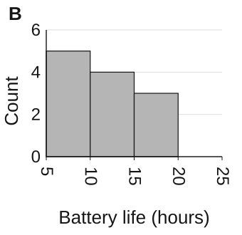
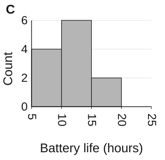
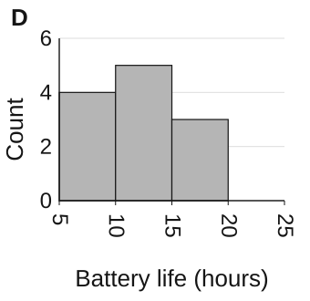
Reviewer key and revision details
Derived answer: D. Historical stored key must be compared before release.
A · retained_histogram — Bin-count error: the 10-14 bar has 4 instead of 5, while the 15-19 bar has 4 instead of 3. A correct total alone does not make the individual bars accurate. Fix: Tally each observation into its interval before comparing bar heights.
B · replaced_keyless_stemplot — Bin-count error: the 10-14 bar has 4 instead of 5, while the 5-9 bar has 5 instead of 4. A correct total alone does not make the individual bars accurate. Fix: Tally each observation into its interval before comparing bar heights.
C · replaced_categorical_bar — Bin-count error: the 15-19 bar has 2 instead of 3, while the 10-14 bar has 6 instead of 5. A correct total alone does not make the individual bars accurate. Fix: Tally each observation into its interval before comparing bar heights.
D · retained_histogram — Each bar matches the number of supplied observations in its interval. The frequencies total 12, and every observation is counted once.


apstat-u1-5-3a-graphs-105003
The one-way commute times (minutes) are 13, 15, 19, 24, 25, 24, 29, 32, 35, 37, 42, 44. Which representation correctly displays these quantitative data?
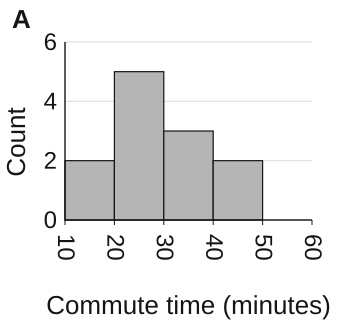
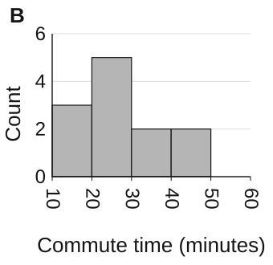
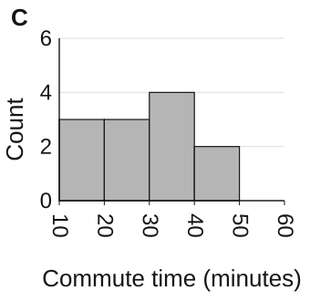
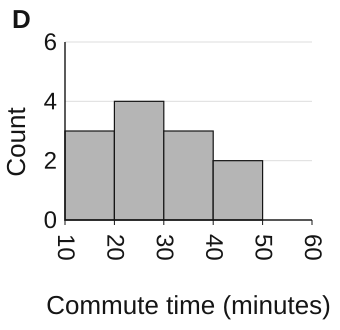
Reviewer key and revision details
Derived answer: D. Historical stored key must be compared before release.
A · replaced_categorical_bar — Bin-count error: the 10-19 bar has 2 instead of 3, while the 20-29 bar has 5 instead of 4. A correct total alone does not make the individual bars accurate. Fix: Tally each observation into its interval before comparing bar heights.
B · replaced_keyless_stemplot — Bin-count error: the 30-39 bar has 2 instead of 3, while the 20-29 bar has 5 instead of 4. A correct total alone does not make the individual bars accurate. Fix: Tally each observation into its interval before comparing bar heights.
C · retained_histogram — Bin-count error: the 20-29 bar has 3 instead of 4, while the 30-39 bar has 4 instead of 3. A correct total alone does not make the individual bars accurate. Fix: Tally each observation into its interval before comparing bar heights.
D · retained_histogram — Each bar matches the number of supplied observations in its interval. The frequencies total 12, and every observation is counted once.


apstat-u1-5-3a-graphs-105004
The quiz scores (points) are 63, 68, 69, 72, 74, 79, 79, 81, 86, 87, 92, 95. Which representation correctly displays these quantitative data?
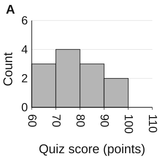
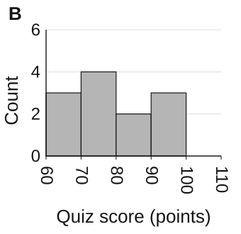
Reviewer key and revision details
Derived answer: A. Historical stored key must be compared before release.
A · retained_histogram — Each bar matches the number of supplied observations in its interval. The frequencies total 12, and every observation is counted once.
B · retained_histogram — Bin-count error: the 80-89 bar has 2 instead of 3, while the 90-99 bar has 3 instead of 2. A correct total alone does not make the individual bars accurate. Fix: Tally each observation into its interval before comparing bar heights.
C · replaced_keyless_stemplot — Bin-count error: the 60-69 bar has 2 instead of 3, while the 70-79 bar has 5 instead of 4. A correct total alone does not make the individual bars accurate. Fix: Tally each observation into its interval before comparing bar heights.
D · replaced_categorical_bar — Bin-count error: the 70-79 bar has 3 instead of 4, while the 80-89 bar has 4 instead of 3. A correct total alone does not make the individual bars accurate. Fix: Tally each observation into its interval before comparing bar heights.


apstat-u1-5-3a-graphs-105005
The battery life (hours) are 9, 10, 8, 10, 12, 9, 11, 11, 13, 16, 16, 14. Which representation correctly displays these quantitative data?
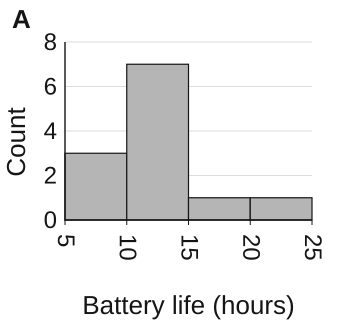
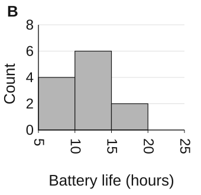
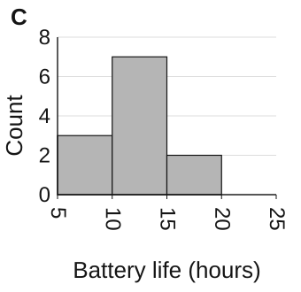

Reviewer key and revision details
Derived answer: C. Historical stored key must be compared before release.
A · retained_histogram — Bin-count error: the 15-19 bar has 1 instead of 2, while the 20-24 bar has 1 instead of 0. A correct total alone does not make the individual bars accurate. Fix: Tally each observation into its interval before comparing bar heights.
B · replaced_keyless_stemplot — Bin-count error: the 10-14 bar has 6 instead of 7, while the 5-9 bar has 4 instead of 3. A correct total alone does not make the individual bars accurate. Fix: Tally each observation into its interval before comparing bar heights.
C · retained_histogram — Each bar matches the number of supplied observations in its interval. The frequencies total 12, and every observation is counted once.
D · replaced_categorical_bar — Bin-count error: the 5-9 bar has 2 instead of 3, while the 10-14 bar has 8 instead of 7. A correct total alone does not make the individual bars accurate. Fix: Tally each observation into its interval before comparing bar heights.


apstat-u1-5-3a-graphs-105006
The quiz scores (points) are 64, 65, 67, 72, 75, 78, 78, 81, 85, 87, 90, 97. Which representation correctly displays these quantitative data?
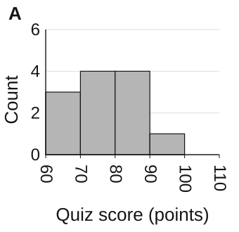
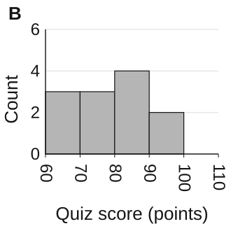

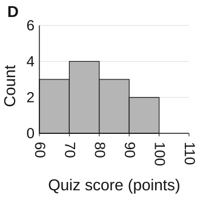
Reviewer key and revision details
Derived answer: D. Historical stored key must be compared before release.
A · replaced_categorical_bar — Bin-count error: the 90-99 bar has 1 instead of 2, while the 80-89 bar has 4 instead of 3. A correct total alone does not make the individual bars accurate. Fix: Tally each observation into its interval before comparing bar heights.
B · retained_histogram — Bin-count error: the 70-79 bar has 3 instead of 4, while the 80-89 bar has 4 instead of 3. A correct total alone does not make the individual bars accurate. Fix: Tally each observation into its interval before comparing bar heights.
C · replaced_keyless_stemplot — Bin-count error: the 80-89 bar has 2 instead of 3, while the 70-79 bar has 5 instead of 4. A correct total alone does not make the individual bars accurate. Fix: Tally each observation into its interval before comparing bar heights.
D · retained_histogram — Each bar matches the number of supplied observations in its interval. The frequencies total 12, and every observation is counted once.


apstat-u1-5-3a-graphs-105007
The one-way commute times (minutes) are 13, 17, 19, 21, 24, 25, 27, 33, 37, 38, 42, 43. Which representation correctly displays these quantitative data?

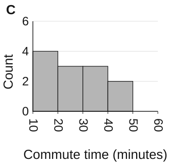
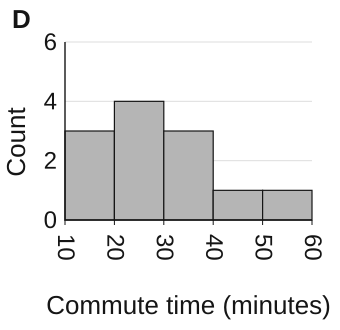
Reviewer key and revision details
Derived answer: B. Historical stored key must be compared before release.
A · replaced_keyless_stemplot — Bin-count error: the 10-19 bar has 2 instead of 3, while the 20-29 bar has 5 instead of 4. A correct total alone does not make the individual bars accurate. Fix: Tally each observation into its interval before comparing bar heights.
B · retained_histogram — Each bar matches the number of supplied observations in its interval. The frequencies total 12, and every observation is counted once.
C · replaced_categorical_bar — Bin-count error: the 20-29 bar has 3 instead of 4, while the 10-19 bar has 4 instead of 3. A correct total alone does not make the individual bars accurate. Fix: Tally each observation into its interval before comparing bar heights.
D · retained_histogram — Bin-count error: the 40-49 bar has 1 instead of 2, while the 50-59 bar has 1 instead of 0. A correct total alone does not make the individual bars accurate. Fix: Tally each observation into its interval before comparing bar heights.


apstat-u1-5-3a-graphs-105008
The quiz scores (points) are 63, 67, 68, 71, 75, 77, 79, 83, 87, 89, 90, 95. Which representation correctly displays these quantitative data?
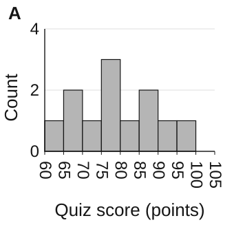
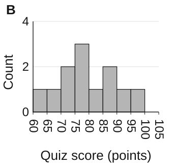
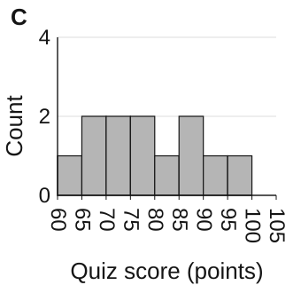
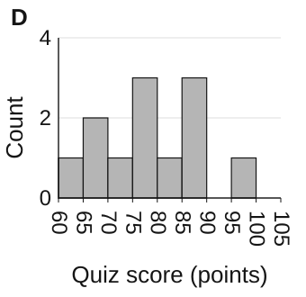
Reviewer key and revision details
Derived answer: A. Historical stored key must be compared before release.
A · retained_histogram — Each bar matches the number of supplied observations in its interval. The frequencies total 12, and every observation is counted once.
B · retained_histogram — Bin-count error: the 65-69 bar has 1 instead of 2, while the 70-74 bar has 2 instead of 1. A correct total alone does not make the individual bars accurate. Fix: Tally each observation into its interval before comparing bar heights.
C · replaced_keyless_stemplot — Bin-count error: the 75-79 bar has 2 instead of 3, while the 70-74 bar has 2 instead of 1. A correct total alone does not make the individual bars accurate. Fix: Tally each observation into its interval before comparing bar heights.
D · replaced_categorical_bar — Bin-count error: the 90-94 bar has 0 instead of 1, while the 85-89 bar has 3 instead of 2. A correct total alone does not make the individual bars accurate. Fix: Tally each observation into its interval before comparing bar heights.


apstat-u1-5-3a-graphs-105009
The quiz scores (points) are 61, 67, 67, 70, 73, 79, 81, 84, 86, 89, 93, 97. Which representation correctly displays these quantitative data?
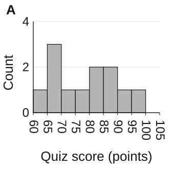
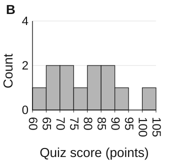
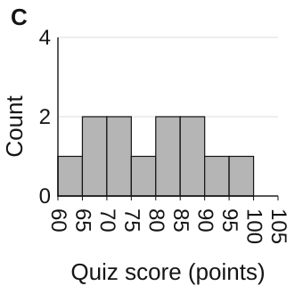
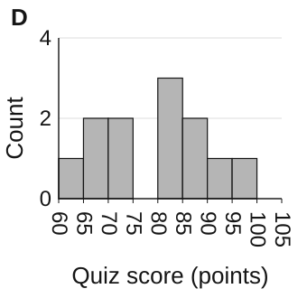
Reviewer key and revision details
Derived answer: C. Historical stored key must be compared before release.
A · replaced_keyless_stemplot — Bin-count error: the 70-74 bar has 1 instead of 2, while the 65-69 bar has 3 instead of 2. A correct total alone does not make the individual bars accurate. Fix: Tally each observation into its interval before comparing bar heights.
B · retained_histogram — Bin-count error: the 95-99 bar has 0 instead of 1, while the 100-104 bar has 1 instead of 0. A correct total alone does not make the individual bars accurate. Fix: Tally each observation into its interval before comparing bar heights.
C · retained_histogram — Each bar matches the number of supplied observations in its interval. The frequencies total 12, and every observation is counted once.
D · replaced_categorical_bar — Bin-count error: the 75-79 bar has 0 instead of 1, while the 80-84 bar has 3 instead of 2. A correct total alone does not make the individual bars accurate. Fix: Tally each observation into its interval before comparing bar heights.


apstat-u1-5-3a-graphs-105010
The quiz scores (points) are 62, 68, 67, 72, 73, 76, 79, 84, 86, 87, 91, 94. Which representation correctly displays these quantitative data?
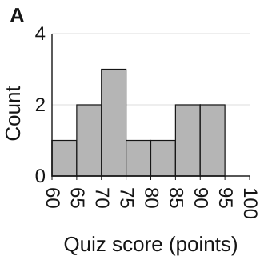
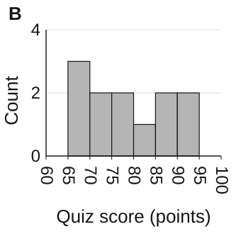
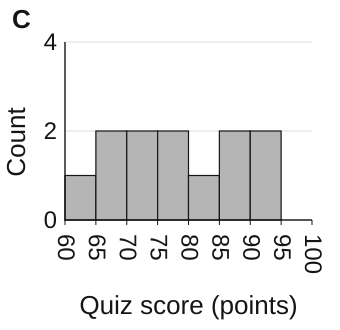
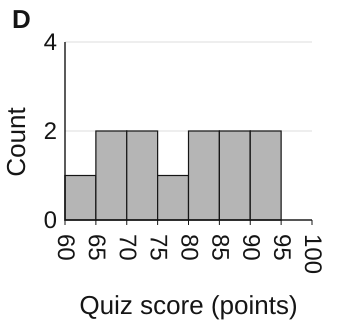
Reviewer key and revision details
Derived answer: C. Historical stored key must be compared before release.
A · replaced_keyless_stemplot — Bin-count error: the 75-79 bar has 1 instead of 2, while the 70-74 bar has 3 instead of 2. A correct total alone does not make the individual bars accurate. Fix: Tally each observation into its interval before comparing bar heights.
B · retained_histogram — Bin-count error: the 60-64 bar has 0 instead of 1, while the 65-69 bar has 3 instead of 2. A correct total alone does not make the individual bars accurate. Fix: Tally each observation into its interval before comparing bar heights.
C · retained_histogram — Each bar matches the number of supplied observations in its interval. The frequencies total 12, and every observation is counted once.
D · replaced_categorical_bar — Bin-count error: the 75-79 bar has 1 instead of 2, while the 80-84 bar has 2 instead of 1. A correct total alone does not make the individual bars accurate. Fix: Tally each observation into its interval before comparing bar heights.


apstat-u1-5-3a-graphs-105011
The battery life (hours) are 7, 7, 10, 10, 10, 10, 13, 11, 13, 16, 16, 14. Which representation correctly displays these quantitative data?
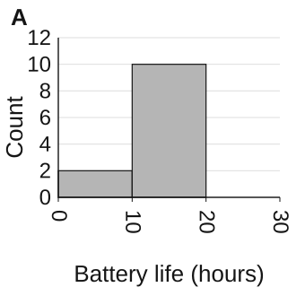
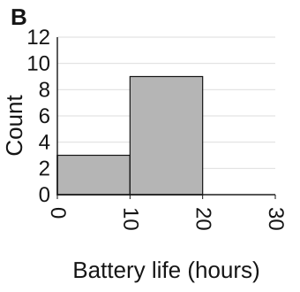
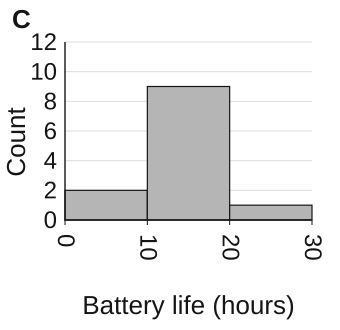
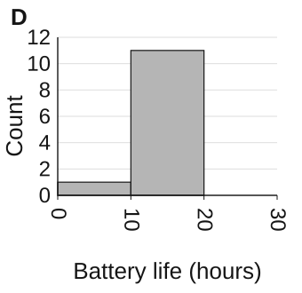
Reviewer key and revision details
Derived answer: A. Historical stored key must be compared before release.
A · retained_histogram — Each bar matches the number of supplied observations in its interval. The frequencies total 12, and every observation is counted once.
B · replaced_keyless_stemplot — Bin-count error: the 10-19 bar has 9 instead of 10, while the 0-9 bar has 3 instead of 2. A correct total alone does not make the individual bars accurate. Fix: Tally each observation into its interval before comparing bar heights.
C · replaced_categorical_bar — Bin-count error: the 10-19 bar has 9 instead of 10, while the 20-29 bar has 1 instead of 0. A correct total alone does not make the individual bars accurate. Fix: Tally each observation into its interval before comparing bar heights.
D · retained_histogram — Bin-count error: the 0-9 bar has 1 instead of 2, while the 10-19 bar has 11 instead of 10. A correct total alone does not make the individual bars accurate. Fix: Tally each observation into its interval before comparing bar heights.


apstat-u1-5-3a-graphs-105012
The battery life (hours) are 6, 8, 10, 8, 9, 12, 10, 12, 13, 16, 16, 17. Which representation correctly displays these quantitative data?
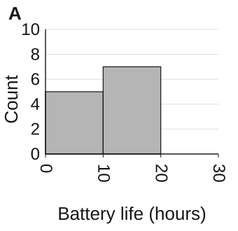
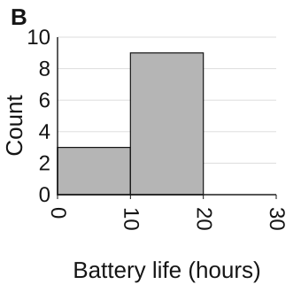
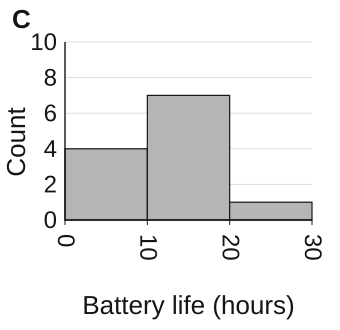
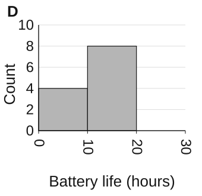
Reviewer key and revision details
Derived answer: D. Historical stored key must be compared before release.
A · replaced_keyless_stemplot — Bin-count error: the 10-19 bar has 7 instead of 8, while the 0-9 bar has 5 instead of 4. A correct total alone does not make the individual bars accurate. Fix: Tally each observation into its interval before comparing bar heights.
B · replaced_categorical_bar — Bin-count error: the 0-9 bar has 3 instead of 4, while the 10-19 bar has 9 instead of 8. A correct total alone does not make the individual bars accurate. Fix: Tally each observation into its interval before comparing bar heights.
C · retained_histogram — Bin-count error: the 10-19 bar has 7 instead of 8, while the 20-29 bar has 1 instead of 0. A correct total alone does not make the individual bars accurate. Fix: Tally each observation into its interval before comparing bar heights.
D · retained_histogram — Each bar matches the number of supplied observations in its interval. The frequencies total 12, and every observation is counted once.


apstat-u1-5-3a-graphs-105013
The quiz scores (points) are 61, 68, 69, 70, 75, 79, 80, 84, 87, 88, 90, 96. Which representation correctly displays these quantitative data?
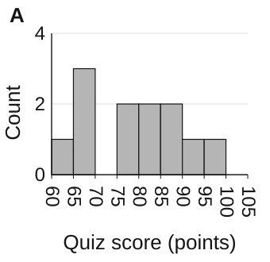
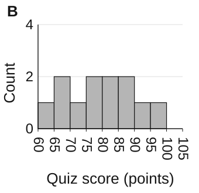
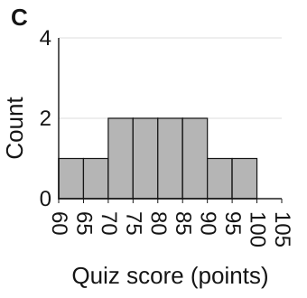
Reviewer key and revision details
Derived answer: B. Historical stored key must be compared before release.
A · replaced_categorical_bar — Bin-count error: the 70-74 bar has 0 instead of 1, while the 65-69 bar has 3 instead of 2. A correct total alone does not make the individual bars accurate. Fix: Tally each observation into its interval before comparing bar heights.
B · retained_histogram — Each bar matches the number of supplied observations in its interval. The frequencies total 12, and every observation is counted once.
C · retained_histogram — Bin-count error: the 65-69 bar has 1 instead of 2, while the 70-74 bar has 2 instead of 1. A correct total alone does not make the individual bars accurate. Fix: Tally each observation into its interval before comparing bar heights.
D · replaced_keyless_stemplot — Bin-count error: the 75-79 bar has 1 instead of 2, while the 70-74 bar has 2 instead of 1. A correct total alone does not make the individual bars accurate. Fix: Tally each observation into its interval before comparing bar heights.


apstat-u1-5-3a-graphs-105014
The one-way commute times (minutes) are 14, 16, 20, 24, 25, 24, 29, 34, 36, 36, 42, 45. Which representation correctly displays these quantitative data?
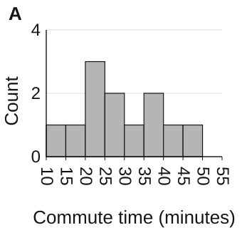
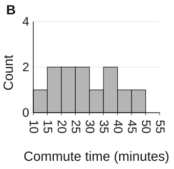
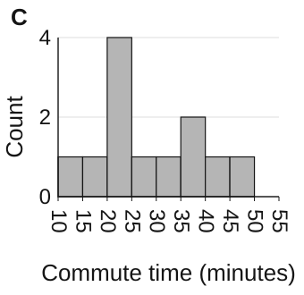
Reviewer key and revision details
Derived answer: A. Historical stored key must be compared before release.
A · retained_histogram — Each bar matches the number of supplied observations in its interval. The frequencies total 12, and every observation is counted once.
B · replaced_keyless_stemplot — Bin-count error: the 20-24 bar has 2 instead of 3, while the 15-19 bar has 2 instead of 1. A correct total alone does not make the individual bars accurate. Fix: Tally each observation into its interval before comparing bar heights.
C · replaced_categorical_bar — Bin-count error: the 25-29 bar has 1 instead of 2, while the 20-24 bar has 4 instead of 3. A correct total alone does not make the individual bars accurate. Fix: Tally each observation into its interval before comparing bar heights.
D · retained_histogram — Bin-count error: the 35-39 bar has 1 instead of 2, while the 40-44 bar has 2 instead of 1. A correct total alone does not make the individual bars accurate. Fix: Tally each observation into its interval before comparing bar heights.


apstat-u1-5-3a-graphs-105015
The online order totals (dollars) are 20, 22, 28, 29, 31, 34, 38, 44, 47, 49, 52, 58. Which representation correctly displays these quantitative data?
Reviewer key and revision details
Derived answer: A. Historical stored key must be compared before release.
A · retained_histogram — Each bar matches the number of supplied observations in its interval. The frequencies total 12, and every observation is counted once.
B · retained_histogram — Bin-count error: the 30-39 bar has 2 instead of 3, while the 40-49 bar has 4 instead of 3. A correct total alone does not make the individual bars accurate. Fix: Tally each observation into its interval before comparing bar heights.
C · replaced_categorical_bar — Bin-count error: the 20-29 bar has 3 instead of 4, while the 30-39 bar has 4 instead of 3. A correct total alone does not make the individual bars accurate. Fix: Tally each observation into its interval before comparing bar heights.
D · replaced_keyless_stemplot — Bin-count error: the 30-39 bar has 2 instead of 3, while the 20-29 bar has 5 instead of 4. A correct total alone does not make the individual bars accurate. Fix: Tally each observation into its interval before comparing bar heights.


apstat-u1-5-3a-graphs-105016
The battery life (hours) are 8, 10, 10, 9, 12, 11, 10, 12, 12, 15, 15, 17. Which representation correctly displays these quantitative data?
Reviewer key and revision details
Derived answer: C. Historical stored key must be compared before release.
A · retained_histogram — Bin-count error: the 10-14 bar has 6 instead of 7, while the 15-19 bar has 4 instead of 3. A correct total alone does not make the individual bars accurate. Fix: Tally each observation into its interval before comparing bar heights.
B · replaced_keyless_stemplot — Bin-count error: the 10-14 bar has 6 instead of 7, while the 5-9 bar has 3 instead of 2. A correct total alone does not make the individual bars accurate. Fix: Tally each observation into its interval before comparing bar heights.
C · retained_histogram — Each bar matches the number of supplied observations in its interval. The frequencies total 12, and every observation is counted once.
D · replaced_categorical_bar — Bin-count error: the 15-19 bar has 2 instead of 3, while the 10-14 bar has 8 instead of 7. A correct total alone does not make the individual bars accurate. Fix: Tally each observation into its interval before comparing bar heights.


apstat-u1-5-3a-graphs-105017
The seedling heights (cm) are 8, 12, 13, 14, 13, 16, 15, 17, 21, 21, 22, 24. Which representation correctly displays these quantitative data?
Reviewer key and revision details
Derived answer: D. Historical stored key must be compared before release.
A · retained_histogram — Bin-count error: the 20-29 bar has 3 instead of 4, while the 30-39 bar has 1 instead of 0. A correct total alone does not make the individual bars accurate. Fix: Tally each observation into its interval before comparing bar heights.
B · replaced_keyless_stemplot — Bin-count error: the 20-29 bar has 3 instead of 4, while the 10-19 bar has 8 instead of 7. A correct total alone does not make the individual bars accurate. Fix: Tally each observation into its interval before comparing bar heights.
C · replaced_categorical_bar — Bin-count error: the 0-9 bar has 0 instead of 1, while the 10-19 bar has 8 instead of 7. A correct total alone does not make the individual bars accurate. Fix: Tally each observation into its interval before comparing bar heights.
D · retained_histogram — Each bar matches the number of supplied observations in its interval. The frequencies total 12, and every observation is counted once.


apstat-u1-5-3a-graphs-105018
The online order totals (dollars) are 18, 22, 25, 31, 32, 36, 38, 43, 46, 49, 54, 58. Which representation correctly displays these quantitative data?
Reviewer key and revision details
Derived answer: A. Historical stored key must be compared before release.
A · retained_histogram — Each bar matches the number of supplied observations in its interval. The frequencies total 12, and every observation is counted once.
B · replaced_keyless_stemplot — Bin-count error: the 25-29 bar has 0 instead of 1, while the 20-24 bar has 2 instead of 1. A correct total alone does not make the individual bars accurate. Fix: Tally each observation into its interval before comparing bar heights.
C · replaced_categorical_bar — Bin-count error: the 30-34 bar has 1 instead of 2, while the 25-29 bar has 2 instead of 1. A correct total alone does not make the individual bars accurate. Fix: Tally each observation into its interval before comparing bar heights.
D · retained_histogram — Bin-count error: the 40-44 bar has 0 instead of 1, while the 45-49 bar has 3 instead of 2. A correct total alone does not make the individual bars accurate. Fix: Tally each observation into its interval before comparing bar heights.


apstat-u1-5-3a-graphs-105019
The battery life (hours) are 8, 7, 8, 9, 10, 11, 12, 12, 12, 15, 13, 15. Which representation correctly displays these quantitative data?
Reviewer key and revision details
Derived answer: D. Historical stored key must be compared before release.
A · retained_histogram — Bin-count error: the 15-19 bar has 1 instead of 2, while the 20-24 bar has 1 instead of 0. A correct total alone does not make the individual bars accurate. Fix: Tally each observation into its interval before comparing bar heights.
B · replaced_keyless_stemplot — Bin-count error: the 10-14 bar has 5 instead of 6, while the 5-9 bar has 5 instead of 4. A correct total alone does not make the individual bars accurate. Fix: Tally each observation into its interval before comparing bar heights.
C · replaced_categorical_bar — Bin-count error: the 15-19 bar has 1 instead of 2, while the 10-14 bar has 7 instead of 6. A correct total alone does not make the individual bars accurate. Fix: Tally each observation into its interval before comparing bar heights.
D · retained_histogram — Each bar matches the number of supplied observations in its interval. The frequencies total 12, and every observation is counted once.